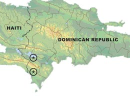

| IMAGEN | NOMBRE | AMENAZAS DE EXTINCIÓN |
|---|---|---|
| Serpiente Cascabel Aruba (Crotaculos unicolor) | La actividad turística y el comercio ilegal son dos causas por las cuales están en peligro crítico de extinción. | |
| Camaleón Enano del Cabo (Bradypodion pumilum) | Por su aspecto llamativo se captura para comercializarlo como mascota exótica, está en peligro. | |
| Caimán Chino (Alligator sinensis) | En peligro crítico por la destrucción de su hábitat y por el desarrollo de asentamientos urbanos. | |
| Iguana de Fiji (Brachylophusb Vitiensis) | En peligro crítico, los gatos domésticos introducidos, las ratas y mangostas las cazan y se alimentan de sus huevos. | |
| Pesca Incidental | Las tortugas quedan atrapadas en las redes de pesca y mueren. |
Nombre común: La Iguana de Ricord o Iguana Ricordi
Nombre cientifíco: Cyclura ricordi
Es una especie de lagarto perteneciente a la familia de los iguánidos. Es una especie endémica de la isla de La Española. En la península de
Barahona, la población de iguanas de Ricord se ven amenazadas por la expansión de la frontera agrícola y el pastoreo de ganado, así como la producción de
carbón.
También es cazada y atrapada por el hombre como fuente de alimento, y es a veces asesinada por pastores de cabras porque creen,
equivocadamente, que las iguanas pueden rasgar y abrir los vientres del ganado con sus crestas puntiagudas.
Características
La iguana de Ricord se caracteriza porque su iris es de color rojo y por las escamas de su cola, que forman anillos. Además se diferencia de otras
iguanas porque tiene cuatro bandas transversales de tonalidad oscura en la parte superior y el color gris de su cuerpo. Además dispone espinas dorsales
muy pronunciadas.

Pueden llegar a alcanzar una longitud aproximada de 50 cm los machos, y entre 40-43 cm las hembras.
Distribucion y Hábitad
Comparado con iguanas de rinoceronte, las iguanas de Ricord son completamente especializadas. Parece que varios factores ambientales claves, incluso
profundidad de suelo y textura, landform, lecho de roca material paternal, y clima determinan su presencia. Las iguanas de Ricord habitan las regiones más
áridas de la República Dominicana, donde el clima es muy estacional.
La iguana de Ricord habita en matorrales xerófilos secos, con suelos arenosos y de barro donde excava las madrigueras que sirven de refugio o de nido,
y que sigue expandiendo a lo largo de los años.? Por lo general las entradas a estas madrigueras son excavadas bajo densa vegetación espinosa, arbustos,
troncos, o rocas expuestas.Los animales adultos de esta especie son principalmente terrestres, mientras que los juveniles tienden a ocupar refugios
arbóreos.
Nombre común: Monstruo de Gila
Nombre cientifíco: Heloderma suspectum
El monstruo de Gila es un lagarto venenoso de América del Norte, a menudo temido por los seres humanos. Hay 2
subespecies: el monstruo de Gila reticulado (Heloderma suspectum suspectum) y el monstruo de Gila bandeado
(Heloderma suspectum cinctum).
Características
El monstruo de Gila es el lagarto más grande nativo de América del Norte, mide aproximadamente entre 35 y 58,5 cm de largo. Tiene una figura
corpulenta con patas pequeñas, poderosas garras y una cola corta y gruesa donde almacena la grasa que utiliza como energía durante la
hibernación o cuando hay escasez de alimentos.El monstruo de Gila se desplaza con exagerada lentitud. No sabe correr e intentaríamos
en vano ahuyentar a uno de estos reptiles. De 500 g a 1 kg de peso, es un reptil pasivo de lentos movimientos.
El cuerpo de este reptil es largo y robusto, con una cola corta pero gruesa. Tiene la piel recubierta de escamas
óseas con bordes de color amarillo, naranja, rosa y negro. Su cabeza, barbilla, cuello y patas son color negro;
estas últimas son fuertes, pesadas y con poderosas garras. Los ojos tienen pupilas redondas y tiene por oídos unas
ranuras estrechas.
Distribución y Hábitat
El monstruo de Gila se extiende a lo largo del suroeste de Estados Unidos y del noroeste de México,
en Norteamérica. En concreto, se pueden encontrar ejemplares desde Utah, el sur de Nevada, en California, en
Arizona (E.U.A.) y a través de Sonora y Sinaloa (México).
Habita zonas áridas a altitudes desde el nivel del mar hasta los 1,500 metros. Está presente en hábitats de
matorrales secos, en desiertos, en colinas rocosas, en las laderas, en el fondo de los cañones y en las áreas
cercanas a los arroyos en donde haya cactus, arbustos y hierbas.
Amenazas del Monstruo de Gila
El monstruo de Gila es una especie que está “Casi Amenazada”, de acuerdo con la Unión Internacional para la
Conservación de la Naturaleza. Sus poblaciones se ven afectadas por la destrucción de su hábitat como consecuencia
de la expansión humana y en la actualidad muchos ejemplares se venden para ser mascotas exóticas.
Por otro lado, el miedo que genera este reptil provocó su caza y captura varios años atrás, aunque en realidad
representa poca amenaza en vista de sus lentos movimientos. Actualmente se encuentra protegido en todos los estados
en los que se encuentra.
Nombre común: Tortuga Carey
Nombre cientifíco: Eretmochelys imbricata
Consideradas por muchos como la más bella de las tortugas marinas con sus conchas de colores, la tortuga carey se encuentra en las aguas tropicales
de todo el mundo. Pasan su tiempo en los arrecifes de coral, zonas rocosas, lagunas, islas oceánicas, y las zonas costeras de poca profundidad.
Llamado así por su estrecha cabeza y agudo pico de pájaro, las tortugas carey pueden alcanzar las grietas y hendiduras de los arrecifes de coral en busca
de comida. Su dieta es muy especializada, alimentándose casi exclusivamente de esponjas.
Una de las tortugas más pequeñas, los adultos pesan entre 100-200 libras (45-90 Kg.) y llegar a 2-3 pies (más o menos 0,5 a 1 metro) de longitud.
Caracteristicas
1. Pueden alcanzar velocidades de 24 km/h y se han registrado desplazamientos de hasta 1.8 km. Pueden sumergirse hasta 70 metros por más de 80 minutos.
2. Las tortuga carey adultas miden entre 60 y 90-100 cm de largo en el caparazón y entre 50 y 80 kg de peso.
3. Su caparazón es de color combinado con claros y oscuros en amarillos y marrones. Su forma es de corazón, pero conforme maduran, se hace más alargado
hasta llegar a una figura oval.
4. El caparazón está conformado por gruesas placas que se superponen, creando una circunferencia que simula unos afilados dientes de cuchillo o una sierra.
5. Su mandíbula tiene forma de pico, por lo que también es parte de sus rasgos distintivos.
6. La diferencia entre machos y hembras puede distinguirse porque los primeros tienen una pigmentación más clara, tienen peto cóncavo, garras más largas
y una cola más ancha.
Distribucion y Hábitat
Esta especie habita en regiones tropicales y algunas regiones sub-tropicales en el Atlántico, el Pacífico y el Índico.
Las poblaciones más grandes se encuentran en el Mar Caribe, Indonesia, México y Australia.
Las tortugas carey no se encuentran en el Mediterráneo y algunas se encuentran en las aguas de Estados Unidos, y sólo un puñado anida en la Florida
cada año.
Causas de Extinción
Comercio: En su hermoso caparazón(concha). Su caparazón, de colores brillantes con diseños intrincados, se comercializa internacionalmente con fines ornamentales.La cáscara se utiliza para artículos tales como joyas, peines y cepillos, y las incrustaciones en muebles y otras piezas decorativas.
Caza: Las tortugas carey fueron cazadas casi hasta su extinción antes de la prohibición del comercio de carey; Japón importó un estimado de 2 millones de tortugas, entre 1950 y 1992. A pesar del hecho de que el comercio internacional de sus conchas es ilegal, todavía hay un floreciente mercado negro.
Destrucción del hábitat de anidación y alimentación.
La contaminación.
Prácticas de pesca destructivas, como la pesca con dinamita.
Al igual que muchas tortugas marinas, la tortuga carey es una especie en peligro crítico debido principalmente al impacto humano.Los huevos de carey se comen en todo el mundo a pesar de estado de protección internacional de la tortuga, y que a menudo son asesinadas por sus impresionantes conchas.
Nombre común: Cocodrilo de Morelet o Cocodrilo Mexicano
Nombre cientifíco: Crocodylus moreletti
Es una especie de cocodrilo de pequeño tamaño distribuido por Guatemala, Belice y todo el golfo de México en los estados de Tamaulipas, Veracruz, Tabasco,
Campeche, Yucatán, Quintana Roo y Chiapas. Por lo general alcanza unos 3 metros de longitud.
El cocodrilo de Morelet o cocodrilo mexicano fue descubierto en México en 1850 y lleva el nombre del naturalista francés que hizo el descubrimiento,
el P.M.A. Morelet (1809-1892). Se confunde mucho con el cocodrilo cubano y el cocodrilo americano, porque son de características similares, comunes entre
las especies. No se dieron cuenta de que eran una especie totalmente diferente hasta la década de 1920. Los cocodrilos actuales provienen de un antiguo
linaje que comprende más de 125 géneros.
Caracteristicas
Destaca su amplio hocico, con 66-68 dientes cuando están completamente maduros. Los cocodrilos se pueden distinguir de los lagartos a causa de sus dientes
tanto en su mandíbula superior como en la inferior. Sus dientes en ambas mandíbulas están perfectamente alineados. El cuarto diente de la mandíbula inferior
del cocodrilo es visible cuando su mandíbula se cierra debido a que es ligeramente más grande.
Las fosas nasales se encuentran enfrente de la boca, y luego directamente detrás de ellas están los ojos, y en seguida las orejas, los tres están en la
parte superior su cabeza. Cuando está casi totalmente sumergido, todavía tiene la capacidad de oler, oír y conocer sus alrededores. Los cocodrilos pueden
ver bajo el agua debido a su membrana nictitante que rodea el ojo.Son de color gris oscuro-marrón.
Tienen bandas oscuras y manchas en el cuerpo y la cola. Esto es similar a otros cocodrilos, como el cocodrilo americano,
pero el moreletii es algo más oscuro. Los cocodrilos jóvenes son de color amarillo brillante con algunas bandas oscuras. Tienen cuatro patas, dos delanteras
y dos traseras, junto con una larga cola que utilizan para nadar. Las patas traseras de los cocodrilos están unidas por una membrana, son cortas, por ello
los cocodrilos siempre se encuentran muy cerca de la tierra.
Distribucion y Hábitat
El cocodrilo de Morelet se puede encontrar en hábitats de agua dulce en América Central y en la costa del Golfo de México, se extiende a través de Belice,
Guatemala y México. En los hábitats de agua dulce prefieren sus zonas desoladas, que se encuentren aisladas.
Esta especie de cocodrilo se puede encontrar en gran parte; en pantanos de agua dulce y pantanos que se encuentran tierra adentro, y en los grandes ríos y
lagos.Ambos de estos hábitats cubiertos de bosques para ayudar a agregar la cubierta.
Amenazas del Cocodrilo de Morelet
El cocodrilo de Morelet, ha sido amenazado por la destrucción de su hábitat y la caza ilegal. Ambos factores han reducido significativamente sus
poblaciones. Se le cazaba por su piel durante los años 1940 y 1950, con el fin de ser utilizado para hacer carteras, abrigos y zapatos con su piel.